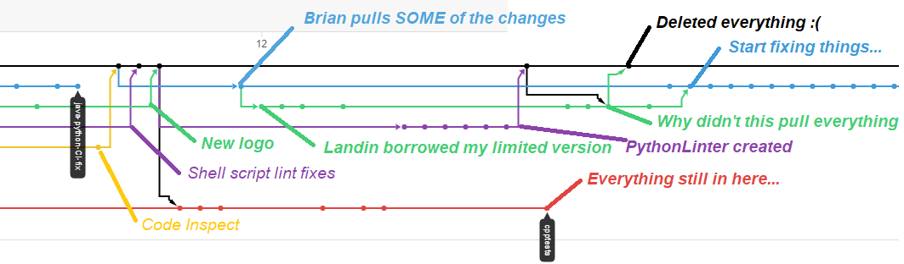

Merger Crises History
- June 12, 2020
-
It was observed by Landin that some important files were missing from his current branch.
For some reason an attempt to pull and update from master had no effect. It appears that
Landin's branch was pulled from one Brian had created, so he could NOT update from master
until Brian updated his. In an effort to resolve the issue Brian instructed him to pull
his changes up to the master (where Brian could see the missing files) and then Brian
stupidly forced it through. Promptly the missing files ... disappeared. If
Landin had pulled back to Brian's branch, he would have pushed everything to that branch
and then an update from master would have all the missing things. Oh well. Live and learn.
